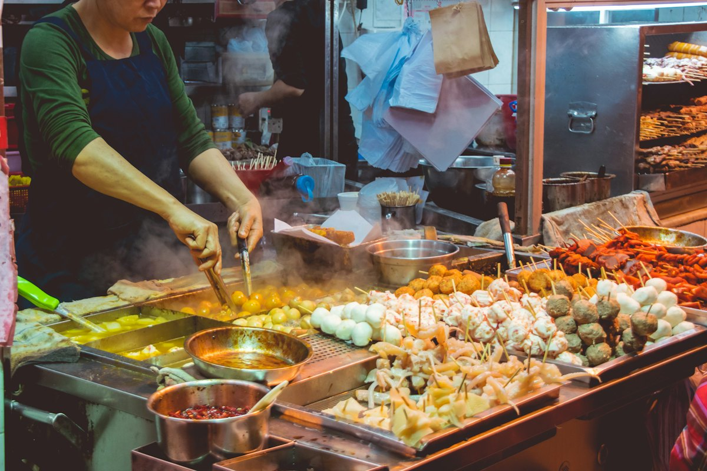
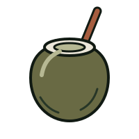
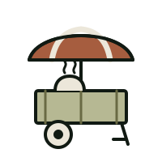
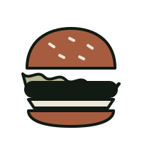

Eat &
drink

Where we eat on Koh Phangan, from a coffee a few minutes from Dalisay to night markets, Thai kitchens and sunset bars.
our favourite spots ↓
Things to doClose to Dalisay

Our suggestions around Hin Kong, a short walk or ride away.
- 01
Tomorrow Coconut Lane
A new spot very close to Dalisay for coffee, breakfast and lunch!
- 02
Pura Vida Cafe
Breakfast, brunch and coffee, with vegetarian and vegan options. There's a second cafe at Haad Yao beach.
- 03
Indigo Specialty Coffee & Bakery
A lovely spot for coffee, breakfast, brunch and freshly baked treats.
- 04
Deli Devi
A plant-based cafe and deli for breakfast, brunch, vegan cheeses, chocolate and cacao drinks.
- 05
Pure Vegan Heaven
Plant-based food for breakfast or lunch.
- 06
Kikekla Bar & Restaurant
Beachfront food and cocktails. A lovely spot for a meal or sunset drinks.
- 07
Romanzo Tropicale
Italian food by the beach. A lovely option for dinner around sunset.
- 08
Happiness Restaurant
Beachfront Thai food and seafood with views across Hin Kong Bay.
- 09
L'Alcove
A beachfront bistro for dinner, wine and sunset drinks.
- 10
Cintamani
A cocktail bar and tapas restaurant with delightful decor and sunset views.
- 11
Mana Beach Bar Cafe
A beachside stop for drinks and a relaxed afternoon.
- 12
El Barrio
Mexican food and cocktails. A fun choice for an evening out.
- 13
Dar Mansour
Moroccan dining with slow-cooked tagines and a candlelit garden setting. Reserve ahead and ask about pre-ordering.
- 14
Sati Pot
Persian food with fragrant rice dishes and rich flavours.
Thai food
From MICHELIN-recommended dining to simple local favourites.
- 01
Dear Phangan
Wok TumMICHELIN Guide recommended Thai dining with a seasonal menu featuring local ingredients. Reservations are essential.
- 02
Nong Taa Ped Palo
Wok TumSuper simple, cheap Thai food. A great option for a casual local meal!
- 03
Whum Noi Noi
Nai WokA chill spot on the beach serving authentic Thai food. Recommended for a relaxed evening meal and drinks.
- 04
The Wave Sunset Bar
Sri ThanuThai food on a private beach and a great sunset spot. Lovely for chilling or working during the day.
- 05
Baan Boontom Somtum & Gallery
Thong SalaThai and Isaan food in a charming wooden house with an art gallery atmosphere.
- 06
Nong View
Baan TaiLocal Thai food with Southern Thai flavours.
- 07
Krua Chao Koh
Baan TaiSouthern Thai food and seafood. A lovely choice for exploring local flavours.
- 08
Madam Saak Thong
ChaloklumA family-run restaurant serving Thai and Isaan dishes.
- 09
Chicken Rice Shop
Thong SalaSimple, affordable Thai comfort food. Stop for a plate of chicken rice or pork with rice.
- 10
Pork Leg Restaurant
Thong SalaA simple local spot for braised pork leg and Thai noodle soup.
Night markets & street food

Two weekly markets worth planning your evening around.
Coffee, breakfast & bakeries
Specialty coffee, brunch, fresh bread and pastries.
- 01
Young Son Cafe
Wok TumSpecialty coffee and a peaceful spot to start your morning.
- 02
Balance Specialty Coffee
Maduea WanSpecialty coffee and brunch. A nice stop while exploring the island.
- 03
Bubba's Coffee
3 locationsSpecialty coffee, breakfast and brunch, with three locations around the island.
- 04
Cookies
2 locationsA relaxed spot for good coffee and a hearty breakfast.
- 05
Kaif
ChaloklumA beachfront cafe, restaurant and deli for coffee, breakfast, brunch or a relaxed meal overlooking the bay.
- 06
Bar Nena
Thong SalaAn Italian cafe and bakery for coffee, pastries, focaccia and pizza slices.
- 07
Nira's Home Bakery
Thong SalaA favourite for breakfast, coffee, pastries and bread near the pier.
- 08
Omee Bakery
Artisan bread, fresh pastries and coffee. Try a cinnamon bun, chocolate babka or a croissant!
- 09
LOAF and VINE
A stop for bread and delicatessen treats, including meats and smoked fish.
- 10
Satimi's Ice Cream
Thong SalaStop for homemade ice cream, gelato and fruity sorbets while exploring town.
Western food

Italian, sushi, burgers and pub food for when you fancy something different.
- 01
DAO
Thong SalaProgressive Levantine-Thai cuisine by Chef Nir Mesika. Fine dining, perfect for date night.
- 02
NENA Locanda Italiana
Wok TumItalian dining with pasta, Mediterranean flavours and wine.
- 03
Ristorante Rimini
ChaloklumItalian food with a focus on fish, seafood and pasta. A lovely dinner stop.
- 04
Caffe Della Moca
ChaloklumItalian food, pizza and pasta by the water. A lovely option for dinner.
- 05
Wasabi
Thong Sala & Haad SonSushi, sashimi and Japanese food, in town at Thong Sala or on the west coast at Haad Son.
- 06
Salt
Fresh seafood and creative fusion sushi in a stylish setting. A lovely choice for date night.
- 07
The Lakehouse
Sri ThanuA relaxed lakeside restaurant and pub for a casual meal and drinks with friends.
- 08
Mythai Burgers
Thong Sala & ChaloklumBurgers and fries, in town at Thong Sala or after exploring the northern beaches at Chaloklum.
- 09
SOHO
Thong SalaBurgers, pub food, craft beer and sports.
- 10
The Ugly Duckling
Thong SalaAn Irish pub for a casual meal and drinks.
Viewpoints & drinks
Sunset drinks with a view.
- 01
Top Rock Bar
Nai WokA hillside spot for sunset drinks and sea views. Expect a steep climb up the stairs!
- 02
Apichada Viewpoint Cafe & Bar
Baan TaiEnjoy a drink or a meal with sweeping views towards Koh Samui.
- 03
Apple Bar
Haad YaoA hillside bar for drinks and music. Check what's on before heading over.
- 04
420 Club Phangan
Mae HaadA viewpoint bar overlooking the coast and Koh Ma.
- 05
Lazy Rock
Haad DiaoTucked away behind Secret Beach.
- 06
Mae Haad Tree House
Mae HaadA bar and restaurant with coastal views. Combine it with a visit to Mae Haad Beach.
need a hand?
Hungry for more ideas?
Tell us what you feel like and we'll point you to our favourite spot for it.
Message us on WhatsApp